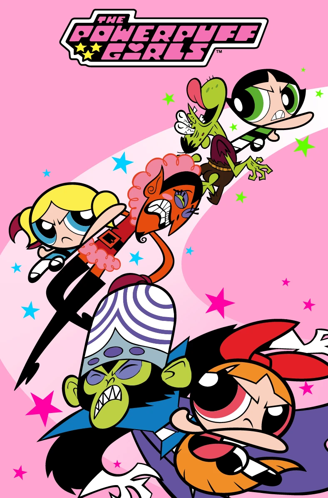
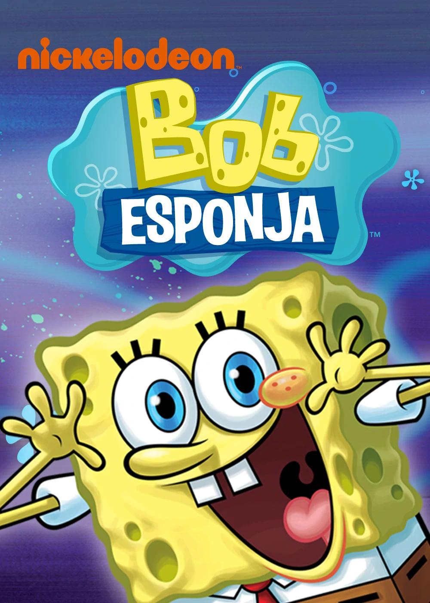
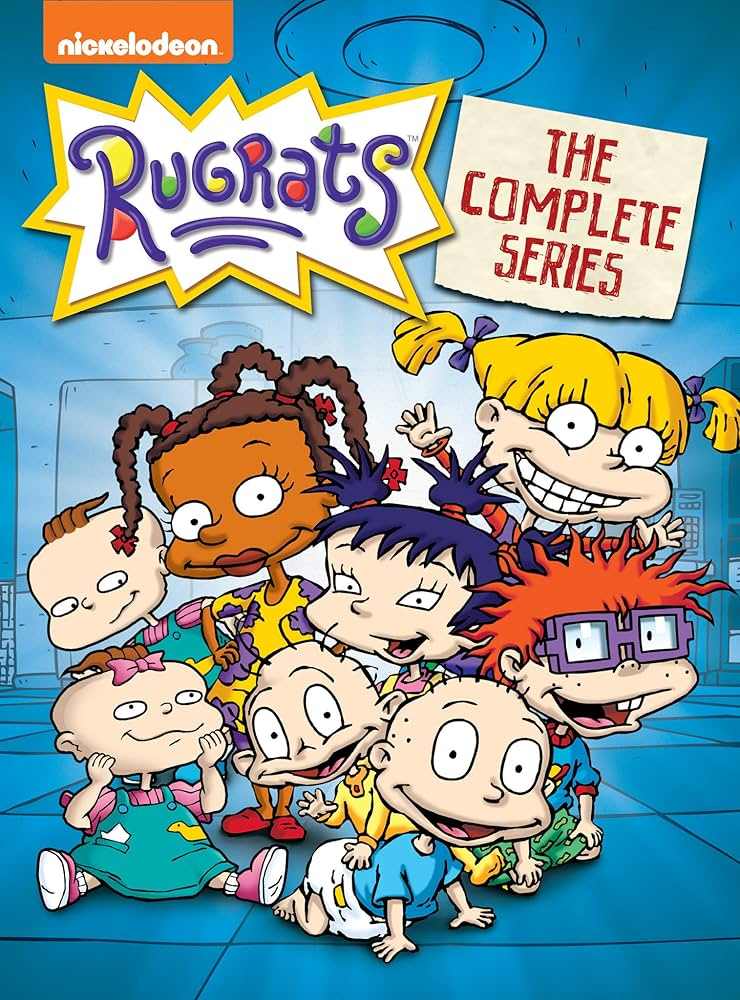
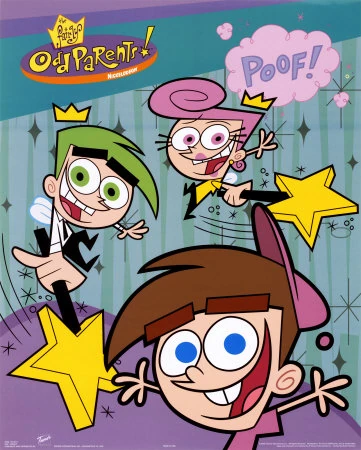
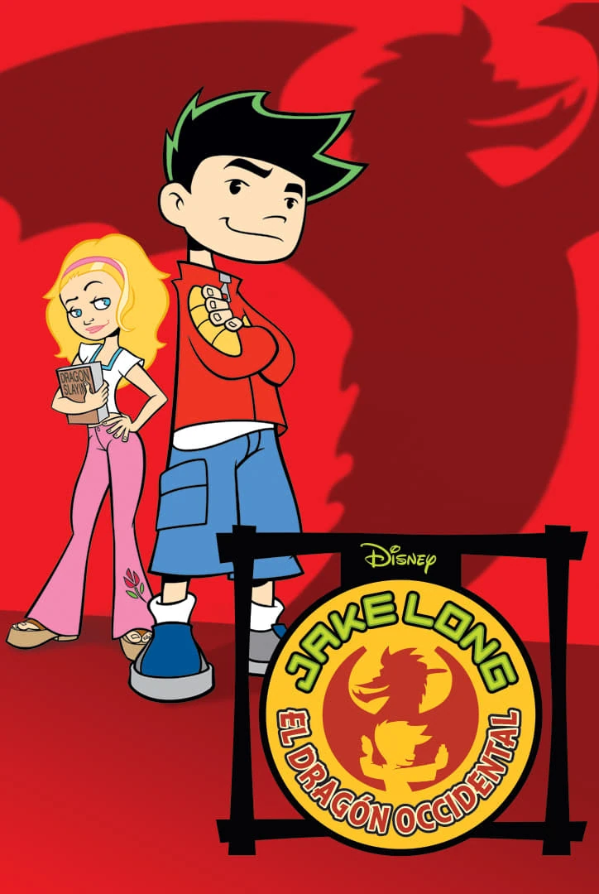
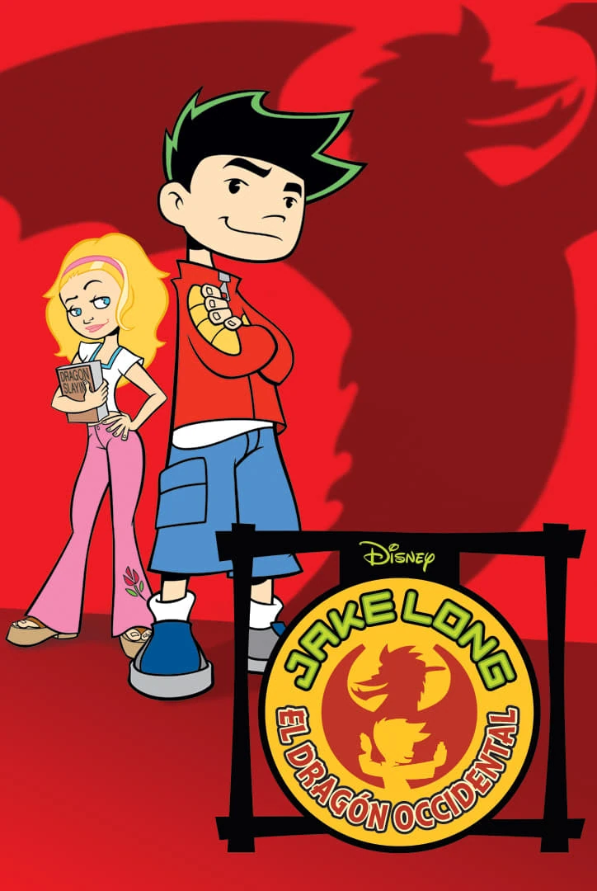

Clasicos
Aqui exploraras y recordaras los grandes clasicos en canales televisivos de caricaturas de los años 2000, junto con sus años de lanzamiento.
Canales y años


Cartoon Network (2000-2009)
Hogar de los clasicos como Las Super nenas y Ed, Edd y Eddy.

Nickelodeon (2000-2009)
Donde se encuentran Bob Esponja y Rugrats.


Disney Channel (2000-2009)
Conocido por Kim Possible y Lilo & Stitch.
 


Fox Kids (2000-2002)
Con exitos como Digimon y X-Men.